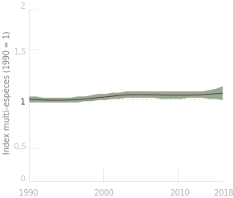
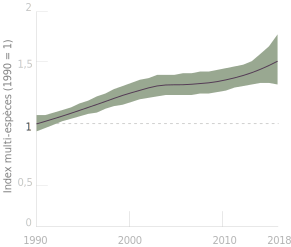
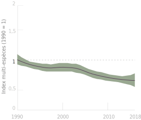
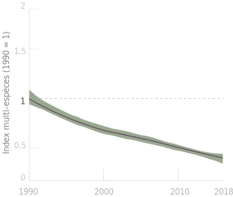
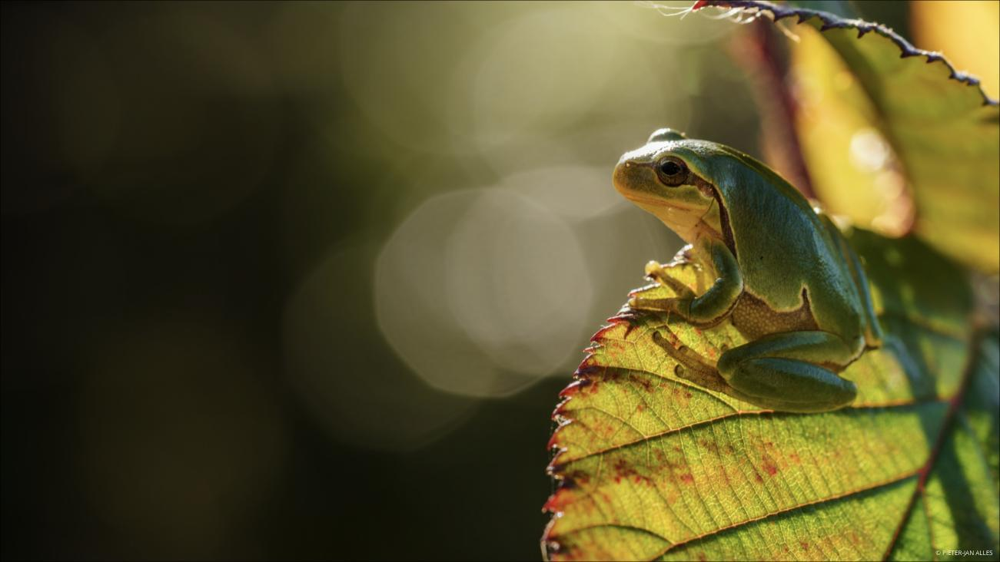
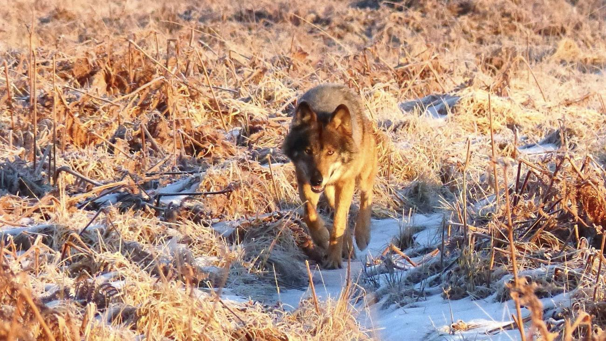
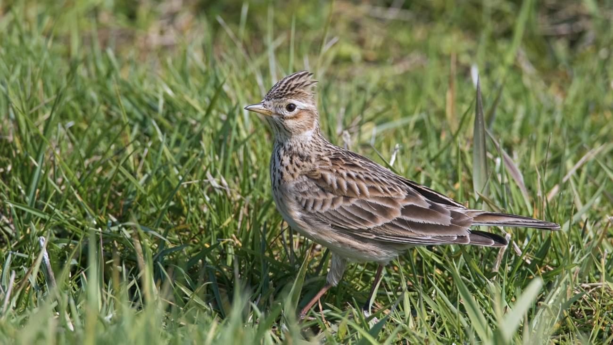

Mieux connaître notre biodiversité pour mieux la préserver !
La nature en Belgique : découvrez le« Rapport Planète Vivante »
Télécharger notre rapportLes coulisses du Rapport Planète vivante
Pourquoi ?
L’état de la biodiversité et celui de notre santé sont inextricablement liés. La pandémie de coronavirus nous l’a violemment rappelé.
Ce nouveau rapport « Planète Vivante – La nature en Belgique » est un document de référence unique sur lequel les décideurs politiques pourront s’appuyer pour relever leurs ambitions et collaborer avec tous les acteurs de la société, afin de mieux connaitre et de mieux protéger notre nature.
Car il est urgent de réaliser que prendre soin de la nature, c’est prendre soin de nous - et il n’y a pas de meilleur endroit pour s’atteler à la tâche que chez nous. Le WWF-Belgique vous propose de découvrir ce rapport inédit en exclusivité.
Télécharger notre rapportComment ?
Le « Rapport Planète Vivante – La nature en Belgique » est le fruit d’une collaboration de près de 2 ans entre des acteurs clés du monde scientifique et de la protection de la biodiversité.
5 organisations de référence - Natagora, Natuurpunt, l’Institut Royal des Sciences Naturelles de Belgique, et la Plate-forme belge pour la biodiversité - ont uni leurs forces et réuni de nombreux experts pour garantir la pertinence d’un rapport sans précédent.
Un immense merci à celles et ceux qui ont rendu possible ce projet hors normes. Accédez à notre méthodologie complèteIPV Belge
Générale
Générale
- IPV Belgique
- Intervalle de confiance (95%)
Zones humides
Zones humides
- IPV Belgique – Zones Humides
- Intervalle de confiance (95%)
Forêts
Forêts
- IPV Belgique – Forêts
- Intervalle de confiance (95%)
AGRICULTURE
AGRICULTURE
- IPV Belgique – Agriculture
- Intervalle de confiance (95%)
En plus d’apporter des informations essentielles sur l’état actuel et les tendances de la biodiversité en Belgique, le “Raport Planète Vivante - La nature en Belgique” a également donné une impulsion majeure à la coopération et à un dialogue renforcé entre les différentes organisations et parties prenantes à travers le pays.
Hilde Eggermont, Belgian Biodiversity PlatformCe “Rapport Planète Vivante” envoie un message concret, scientifiquement fondé et indépendant, qui démontre de manière scientifiquement fondée à quel point il est nécessaire d’agir plus et mieux, si nous voulons nous engager à véritablement relever la courbe de la perte de biodiversité.
Hendrik Segers, Institut royal des Sciences naturelles de BelgiqueLe “Rapport Planète Vivante – La nature en Belgique” est un magnifique exemple de mobilisation des données récoltées sur le terrain par les naturalistes afin de mieux comprendre comment évolue la nature dans notre pays.
Jean-Yves Paquet, NatagoraRassembler toutes les données disponibles (et moins disponibles) sur la biodiversité et essayer d'en tirer les meilleures tendances pour créer un Index Planète Vivante était le plus grand défi de ce projet.
Marc Herremans, NatuurpuntL’élaboration du “Rapport Planète Vivante – La nature en Belgique” est une belle démonstration de volonté de travailler ensemble pour améliorer l’état de la biodiversité en Belgique. Ce rapport sans précédent est un pas important dans cette direction.
Olga Szczodry, WWF-Belgique
En plus d’apporter des informations essentielles sur l’état actuel et les tendances de la biodiversité en Belgique, le “Raport Planète Vivante - La nature en Belgique” a également donné une impulsion majeure à la coopération et à un dialogue renforcé entre les différentes organisations et parties prenantes à travers le pays.
Hilde Eggermont, Belgian Biodiversity Platform
Ce “Rapport Planète Vivante” envoie un message concret, scientifiquement fondé et indépendant, qui démontre de manière scientifiquement fondée à quel point il est nécessaire d’agir plus et mieux, si nous voulons nous engager à véritablement relever la courbe de la perte de biodiversité.
Hendrik Segers, Institut royal des Sciences naturelles de Belgique
Le “Rapport Planète Vivante – La nature en Belgique” est un magnifique exemple de mobilisation des données récoltées sur le terrain par les naturalistes afin de mieux comprendre comment évolue la nature dans notre pays.
Jean-Yves Paquet, Natagora
Rassembler toutes les données disponibles (et moins disponibles) sur la biodiversité et essayer d'en tirer les meilleures tendances pour créer un Index Planète Vivante était le plus grand défi de ce projet.
Marc Herremans, Natuurpunt
L’élaboration du “Rapport Planète Vivante – La nature en Belgique” est une belle démonstration de volonté de travailler ensemble pour améliorer l’état de la biodiversité en Belgique. Ce rapport sans précédent est un pas important dans cette direction.
Olga Szczodry, WWF-BelgiqueVous avez dit biodiversité ?
L’importance de la biodiversité
Toutes nos activités économiques et même l’ensemble de la société dépendent de « services écosystémiques » - fertilisation des sols, environnement sain avec de l’air pur et de l’eau potable, nourriture, matières premières… - absolument vitaux.
Plus la biodiversité est riche, plus l’humanité bénéficie de ces services essentiels.
Mais au-delà de ces bienfaits, la nature a une valeur intrinsèque. Il serait plus que judicieux d’envisager l’humain comme pleinement intégré à son environnement naturel qui, comme le soulignent de plus en plus d’études scientifiques, joue un rôle déterminant sur sa santé physique et mentale.
Qu’est-ce que la biodiversité ?
Contraction des mots « biologie » et « diversité », la biodiversité représente l’extraordinaire diversité de la vie sur Terre.Elle englobe les différents animaux, végétaux, champignons et micro-organismes, mais aussi leurs populations et leurs habitats naturels. On distingue trois niveaux de biodiversité :
- La diversité génétique ou la diversité des individus au sein d’une même espèce.
- La diversité des espèces ou la diversité de toutes les espèces de plantes, d’animaux et de micro-organismes.
- La diversité des écosystèmes, qui reflète les différentes interactions des populations entre elles et avec leur milieu physique.
Les espèces et les espaces de chacun de ces niveaux sont en constante évolution et interagissent entre eux. Une grande diversité génétique permet ainsi aux espèces de s’adapter plus facilement aux modifications de leur environnement. En Belgique, par exemple, les espèces capables de s’adapter à des conditions plus sèches ont plus de chances de survivre au changement climatique.
Zoom surla faune belge
Le Faucon PelerinAllez plus loin et découvrez toute la richesse de la faune belge !
Téléchargez notre rapport et l’ensemble de nos études de la vie sauvage.Le Faucon Pelerin
Falco peregrinusLe faucon pèlerin est un véritable acrobate des airs. Son corps aérodynamique et sa très grande agilité lui permettent de fendre l’air avec des pointes à plus de 200 km/h. Ces prouesses aériennes font de lui l’oiseau le plus rapide au monde.
Au début du 20e siècle, les faucons pèlerins ont été intensivement chassés. Pendant la Seconde Guerre mondiale, ils étaient systématiquement abattus pour protéger les pigeons porteurs de messages. L’usage intensif de pesticides comme le DDT (dans les années 1950-1970) a entraîné un déclin important de leurs populations.
En 1973, le dernier faucon pèlerin nicheur a disparu de Belgique, ce qui incita les défenseurs de la nature à tirer la sonnette d’alarme. Une directive européenne assure désormais la protection de l’espèce au sein de l’Union, les pesticides les plus dangereux ont été bannis, plusieurs programmes d’élevage et de réintroduction ont été lancés et des nichoirs ont été installés dans de nombreux endroits. Tous ces efforts ont porté leurs fruits. Depuis les années 1990, le faucon pèlerin a commencé à réapparaître dans le ciel belge. Aujourd’hui, on compte un peu plus de 80 couples nicheurs en Belgique.
Ce rapace niche sur des parois rocheuses ou sur de hauts bâtiments, comme des tours de refroidissement, des églises ou des cathédrales. À Bruxelles, un couple s’est installé depuis 2004 sur la Cathédrale Saints-Michel-et-Gudule. L’Institut Royal des Sciences naturelles de Belgique y a installé des webcams. Durant la période de nidification, les passants peuvent ainsi suivre en direct les images du nid, situé 50 m plus haut.
Le faucon pèlerin se porte donc bien en Belgique. Avec un bémol toutefois : ses effectifs réduits le rendent vulnérable face aux menaces futures, la survie de l’espèce n’est donc pas garantie.
La Rainette Verte
Hyla arboreaLa rainette verte est une petite grenouille de couleur vert pomme, avec une bande sombre qui sépare le dos du ventre. Elle vit à proximité des mares et des étangs bordés de buissons. En journée, elle somnole, blottie sur une branche exposée au soleil. En fonction de la température, sa couleur peut varier du vert au jaune en passant par le brun. Au crépuscule et pendant la nuit, elle s’active et part à la chasse aux insectes.
Jusqu’aux années 1980, la rainette verte était très répandue en Belgique. L’espèce a ensuite connu une baisse spectaculaire de sa population. À l’aube du 21e siècle, la situation était tout simplement dramatique. On dénombrait à peine 200 mâles chanteurs en Flandre. En Wallonie, l’espèce s’est même éteinte.
Les autorités, les associations de protection de la nature et les gestionnaires des derniers terrains où l’espèce est présente mettent désormais tout en œuvre pour la sauver de l’extinction. Avec succès : les effectifs sont en progression grâce à la création d’étangs et de mares, à une gestion adéquate des plans d’eau et aux aménagements spécifiques dans les milieux environnants. Certains sites en Flandre, notamment au Limbourg, abritent désormais des populations stables de rainettes vertes, allant de quelques centaines à plusieurs milliers d’individus. À partir de ces sites, l’espèce pourra étendre son aire de répartition, notamment grâce à l’aménagement de corridors naturels. Ce réseau écologique favorisera les échanges d’individus et donc de matériel génétique entre les différentes populations. Grâce au maintien d’une large base génétique, les populations seront plus résistantes face aux perturbations du milieu.
Le Loup
Canis lupusLe loup est de retour en Belgique. En 2017, la louve Naya a quitté sa meute en Allemagne pour s’établir à plus de 500 kilomètres de là, dans la province du Limbourg. Elle fut la première louve de retour en Belgique après plus de 100 ans d’absence. En 2018, on comptait au moins trois autres loups en Belgique. Le plus célèbre, le loup August, formait un couple avec Naya. En 2019 et 2020 également, plusieurs loups ont été observés chez nous, en provenance des pays voisins où le nombre de meutes augmente. Avec la naissance des louveteaux de Noëlla et d'August, une première meute est maintenant officiellement établie dans notre pays : une première depuis plus de 100 ans.
Son retour est une très bonne nouvelle pour la nature : il joue un rôle clé au sein d’un écosystème naturel, équilibrant les populations de proies et de prédateurs. Le loup contribue à la bonne santé des populations qu’il cible, à savoir les herbivores, en chassant ses proies parmi les animaux malades ou affaiblis. En cas de présence de loups, les herbivores évitent certaines zones dans la forêt. À ces endroits, l’herbe n’est plus broutée, ce qui permet à la végétation et à la forêt de se régénérer.
Mais tout n’est pas rose pour autant. Les éleveurs s’inquiètent pour leurs troupeaux. Après 100 ans d’absence, nous avons oublié comment cohabiter avec le loup. En 2019, Naya et ses louveteaux (à naître?) ont ainsi très probablement été tués délibérément. Il est crucial d’améliorer l’information et la communication avec les différents acteurs. Les associations Natuurpunt, Natagora et le WWF, ont créé la « Wolf Fencing Team », un réseau de bénévoles qui aide les éleveurs à mettre en place des mesures adéquates, en installant par exemple des clôtures pour protéger les troupeaux des attaques de loups. Ceci pour qu’une cohabitation harmonieuse soit possible.
Photo d'Akela, le loup qui s'est installé dans les Hautes Fagnes.
L’Alouette des Champs
Alauda arvensisL’alouette des champs est une des espèces emblématiques des milieux agricoles. En vous promenant dans les champs par une belle journée d’été, vous apercevrez peut-être un passereau s’élever dans les airs tout en chantant, jusqu’à une centaine de mètres de haut, avant de se laisser retomber tel un parachute. Ce petit oiseau affectionne particulièrement les espaces ouverts, loin des alignements d’arbres, bosquets et haies. Il construit son nid au sol en le dissimulant parmi la végétation, au sein même des cultures, dans les céréales et les hautes herbes.
Jusqu’en 1970, l’alouette des champs était une espèce très abondante, mais en quarante ans, elle a perdu 70 % de ses effectifs belges. En cause : l’augmentation de la taille des parcelles cultivées et l’intensification de l’agriculture. L’alouette des champs a besoin de différents couverts végétaux, proches les uns des autres, qui diffèrent par leur structure et leur période de croissance, afin qu’elle trouve toujours suffisamment de nourriture et une végétation optimale pour la nidification. Avec l’uniformisation des cultures, l’alouette ne parvient plus à avoir ses deux à trois couvées par saison, indispensables au maintien des populations. Les chaumes, qui constituent un excellent garde-manger, deviennent également de plus en plus rares. La chasse et la capture des oiseaux dans les pays où l’alouette des champs hiverne, constituent une menace supplémentaire.
Afin de rompre la monotonie des paysages agricoles, certains agriculteurs maintiennent de larges bandes végétalisées avec différentes espèces de graminées et d’herbes. Les premiers résultats sont déjà très concluants : en bordure des champs, les insectes, dont raffolent les oisillons, sont trois fois plus nombreux qu’au milieu des cultures.
Zoom surla faune belge
Le Faucon Pelerin
En 1973, le dernier faucon pèlerin nicheur a disparu de Belgique… Qu’en est-il aujourd’hui ?
La Rainette Verte
Quelles actions ont été mises en place pour la sauver de l’extinction ?
Le Loup
Saviez-vous qu’après plus d’un siècle, y a une première meute en Belgique ? Découvrez son histoire !
L'Alouette des champs
Pourquoi sa population a-t-elle diminué de 70% en 40 ans ?
Le Faucon Pelerin
Falco peregrinusLe faucon pèlerin est un véritable acrobate des airs. Son corps aérodynamique et sa très grande agilité lui permettent de fendre l’air avec des pointes à plus de 200 km/h. Ces prouesses aériennes font de lui l’oiseau le plus rapide au monde.
Au début du 20e siècle, les faucons pèlerins ont été intensivement chassés. Pendant la Seconde Guerre mondiale, ils étaient systématiquement abattus pour protéger les pigeons porteurs de messages. L’usage intensif de pesticides comme le DDT (dans les années 1950-1970) a entraîné un déclin important de leurs populations.
En 1973, le dernier faucon pèlerin nicheur a disparu de Belgique, ce qui incita les défenseurs de la nature à tirer la sonnette d’alarme. Une directive européenne assure désormais la protection de l’espèce au sein de l’Union, les pesticides les plus dangereux ont été bannis, plusieurs programmes d’élevage et de réintroduction ont été lancés et des nichoirs ont été installés dans de nombreux endroits. Tous ces efforts ont porté leurs fruits. Depuis les années 1990, le faucon pèlerin a commencé à réapparaître dans le ciel belge. Aujourd’hui, on compte un peu plus de 80 couples nicheurs en Belgique.
Ce rapace niche sur des parois rocheuses ou sur de hauts bâtiments, comme des tours de refroidissement, des églises ou des cathédrales. À Bruxelles, un couple s’est installé depuis 2004 sur la Cathédrale Saints-Michel-et-Gudule. L’Institut Royal des Sciences naturelles de Belgique y a installé des webcams. Durant la période de nidification, les passants peuvent ainsi suivre en direct les images du nid, situé 50 m plus haut.
Le faucon pèlerin se porte donc bien en Belgique. Avec un bémol toutefois : ses effectifs réduits le rendent vulnérable face aux menaces futures, la survie de l’espèce n’est donc pas garantie.
La Rainette Verte
Hyla arboreaLa rainette verte est une petite grenouille de couleur vert pomme, avec une bande sombre qui sépare le dos du ventre. Elle vit à proximité des mares et des étangs bordés de buissons. En journée, elle somnole, blottie sur une branche exposée au soleil. En fonction de la température, sa couleur peut varier du vert au jaune en passant par le brun. Au crépuscule et pendant la nuit, elle s’active et part à la chasse aux insectes.
Jusqu’aux années 1980, la rainette verte était très répandue en Belgique. L’espèce a ensuite connu une baisse spectaculaire de sa population. À l’aube du 21e siècle, la situation était tout simplement dramatique. On dénombrait à peine 200 mâles chanteurs en Flandre. En Wallonie, l’espèce s’est même éteinte.
Les autorités, les associations de protection de la nature et les gestionnaires des derniers terrains où l’espèce est présente mettent désormais tout en œuvre pour la sauver de l’extinction. Avec succès : les effectifs sont en progression grâce à la création d’étangs et de mares, à une gestion adéquate des plans d’eau et aux aménagements spécifiques dans les milieux environnants. Certains sites en Flandre, notamment au Limbourg, abritent désormais des populations stables de rainettes vertes, allant de quelques centaines à plusieurs milliers d’individus. À partir de ces sites, l’espèce pourra étendre son aire de répartition, notamment grâce à l’aménagement de corridors naturels. Ce réseau écologique favorisera les échanges d’individus et donc de matériel génétique entre les différentes populations. Grâce au maintien d’une large base génétique, les populations seront plus résistantes face aux perturbations du milieu.
Le Loup
Canis lupusLe loup est de retour en Belgique. En 2017, la louve Naya a quitté sa meute en Allemagne pour s’établir à plus de 500 kilomètres de là, dans la province du Limbourg. Elle fut la première louve de retour en Belgique après plus de 100 ans d’absence. En 2018, on comptait au moins trois autres loups en Belgique. Le plus célèbre, le loup August, formait un couple avec Naya. En 2019 et 2020 également, plusieurs loups ont été observés chez nous, en provenance des pays voisins où le nombre de meutes augmente. Avec la naissance des louveteaux de Noëlla et d'August, une première meute est maintenant officiellement établie dans notre pays : une première depuis plus de 100 ans.
Son retour est une très bonne nouvelle pour la nature : il joue un rôle clé au sein d’un écosystème naturel, équilibrant les populations de proies et de prédateurs. Le loup contribue à la bonne santé des populations qu’il cible, à savoir les herbivores, en chassant ses proies parmi les animaux malades ou affaiblis. En cas de présence de loups, les herbivores évitent certaines zones dans la forêt. À ces endroits, l’herbe n’est plus broutée, ce qui permet à la végétation et à la forêt de se régénérer.
Mais tout n’est pas rose pour autant. Les éleveurs s’inquiètent pour leurs troupeaux. Après 100 ans d’absence, nous avons oublié comment cohabiter avec le loup. En 2019, Naya et ses louveteaux (à naître?) ont ainsi très probablement été tués délibérément. Il est crucial d’améliorer l’information et la communication avec les différents acteurs. Les associations Natuurpunt, Natagora et le WWF, ont créé la « Wolf Fencing Team », un réseau de bénévoles qui aide les éleveurs à mettre en place des mesures adéquates, en installant par exemple des clôtures pour protéger les troupeaux des attaques de loups. Ceci pour qu’une cohabitation harmonieuse soit possible.
Photo d'Akela, le loup qui s'est installé dans les Hautes Fagnes.
L’Alouette des Champs
Alauda arvensisL’alouette des champs est une des espèces emblématiques des milieux agricoles. En vous promenant dans les champs par une belle journée d’été, vous apercevrez peut-être un passereau s’élever dans les airs tout en chantant, jusqu’à une centaine de mètres de haut, avant de se laisser retomber tel un parachute. Ce petit oiseau affectionne particulièrement les espaces ouverts, loin des alignements d’arbres, bosquets et haies. Il construit son nid au sol en le dissimulant parmi la végétation, au sein même des cultures, dans les céréales et les hautes herbes.
Jusqu’en 1970, l’alouette des champs était une espèce très abondante, mais en quarante ans, elle a perdu 70 % de ses effectifs belges. En cause : l’augmentation de la taille des parcelles cultivées et l’intensification de l’agriculture. L’alouette des champs a besoin de différents couverts végétaux, proches les uns des autres, qui diffèrent par leur structure et leur période de croissance, afin qu’elle trouve toujours suffisamment de nourriture et une végétation optimale pour la nidification. Avec l’uniformisation des cultures, l’alouette ne parvient plus à avoir ses deux à trois couvées par saison, indispensables au maintien des populations. Les chaumes, qui constituent un excellent garde-manger, deviennent également de plus en plus rares. La chasse et la capture des oiseaux dans les pays où l’alouette des champs hiverne, constituent une menace supplémentaire.
Afin de rompre la monotonie des paysages agricoles, certains agriculteurs maintiennent de larges bandes végétalisées avec différentes espèces de graminées et d’herbes. Les premiers résultats sont déjà très concluants : en bordure des champs, les insectes, dont raffolent les oisillons, sont trois fois plus nombreux qu’au milieu des cultures.
Tendances par groupe taxonomique de 283 espèces composant l’ipv belge
- Diminution
- Augmentation
- Stable
- Incertain
Des astuces pour préserver la biodiversité !
Découvrez toutes nos astucesBannissez les pesticides et les engrais chimiquesqui contiennent des métaux lourds (plomb, mercure…)
Consommez local et privilégiez les circuits courtspour réduire les émission de CO² notamment
Le samedi 19 septembre, World Cleanup Dayvient avec ta “bulle” nettoyer la plage de Blankenberge.
Intéractions entre climat et biodiversité
Le changement climatique à un impact sur la biodiversité, et vice versa.